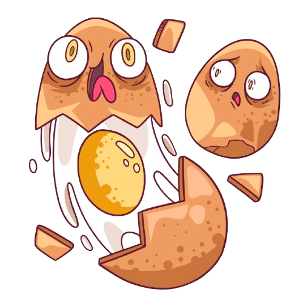

Rak jąder to nowotwór, który najczęściej dotyka młodych mężczyzn w wieku 15-39 lat. Wykryty we wczesnym stadium ma bardzo wysokie szanse na całkowite wyleczenie. Dlatego tak ważna jest profilaktyka i regularne samobadanie.
Czy wiedziałeś?
- Rak jąder stanowi około 1-2% wszystkich nowotworów u mężczyzn, ale jest najczęstszym nowotworem u młodych mężczyzn.
- Regularne samobadanie zajmuje tylko kilka minut miesięcznie i może uratować życie.
- Wczesne wykrycie raka jąder daje ponad 95% szans na całkowite wyleczenie.
